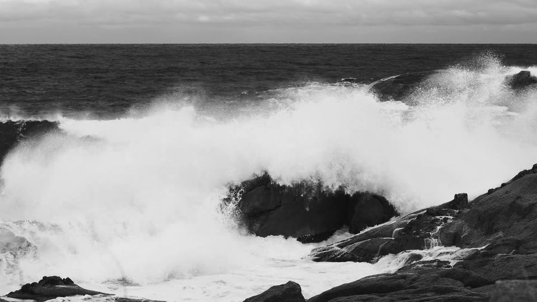
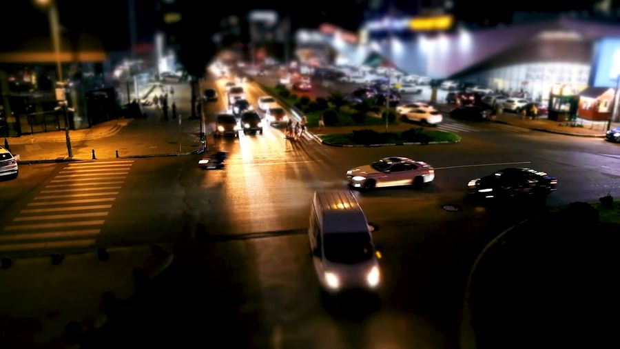
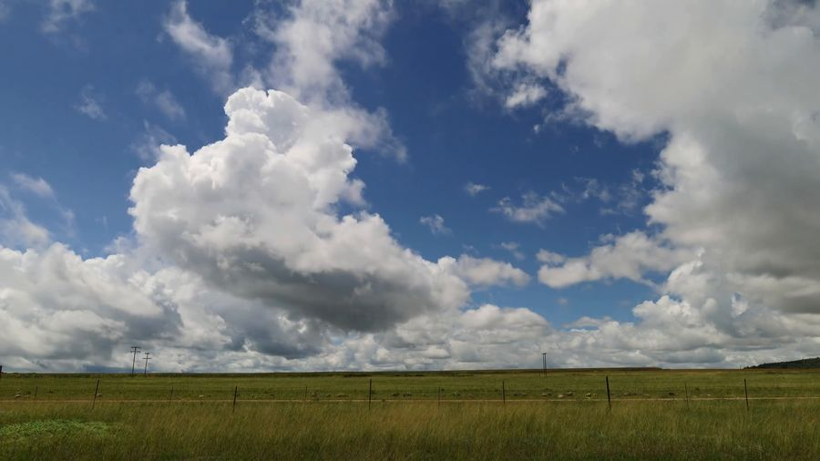

Make big videos small.
Shrinkly shrinks a video to the size you choose, so it fits WhatsApp, an email or a text. It is free, there is no account, and every video stays on your device.
Not on the App Store yet
There is no download link yet. Questions are welcome on the support page.
to send and to store
Try it before you pick a video of your own
Shrinkly comes with four sample clips, so you can see how a size target works on footage that is easy and hard to compress. These are frames from them.

Rocky SurfHigh motion, bright water. A tough one to shrink. 
Night IntersectionDark and detailed. Noise makes files big. 
Cloud FieldCalm and smooth. Shrinks a lot. Reeds at SunsetA vertical clip, like one shot on a phone.
Sample clips are by Pexels creators and are used under the Pexels License.
Pick, set a size, save.
Choose a video
Pick one or many from your photo library or the Files app, or start with a built-in sample clip.
Set the size
Tap a preset such as WhatsApp or Email, or type the size you need in MB. Shrinkly shows an estimate before it starts.
Check and save
Compare before and after, then save to Photos or Files, or share. Your original is never touched.
Everything you need to shrink a video
- By size, by quality, or by preset
- Drag a slider or type a number of megabytes and see the estimate move. Or pick a quality level and let the size follow. Presets cover WhatsApp, Telegram, Discord, Email (25 MB), Instagram and Reels, TikTok, X, YouTube Shorts and Messages.
- Batch compress, and watch the total grow
- Add as many videos as you like and compress them in one queue, with progress and a cancel button. A counter keeps the running total of space you saved, such as “You saved 3.4 GB”.
- Compare before you save
- See the original and the compressed video side by side, with both file sizes, so you can judge the quality yourself.
- H.264 for compatibility, HEVC for smaller files
- H.264 plays almost everywhere. HEVC makes a smaller file at the same quality, and plays on recent phones, tablets and computers. You choose.
- Control the details
- Lower the resolution, reduce 60 frames per second to 30 or 24, change or mute the audio, strip location and other metadata, and trim the clip, when a size target needs more than one lever.
- Progress you can follow
- Compression shows progress and an estimate of the time left, and you can cancel at any time.
- Your originals are safe
- Shrinkly always writes a new file. After a save it can offer to delete the original, and only deletes it if you confirm.
Opens more than iOS does
Videos from phones, cameras, screen recordings, downloads and old drives come in many containers. Shrinkly reads them all with the same engine and saves a file that plays on your Apple devices and in the apps you send to.
| Plays natively in iOS | MP4, MOV, M4V, 3GP, HEVC video, Live Photo video, slo-mo and Cinematic clips, ProRes MOV |
|---|---|
| Opened by the built-in FFmpeg | MKV, WebM, AVI, WMV, ASF, FLV, MPG and MPEG, VOB, TS, M2TS and MTS, OGV, DV, AV1 (decode), VP8 and VP9 |
| Saved as | MP4 or MOV, with H.264 or HEVC video and AAC audio |
| Cannot be processed | Files protected by DRM (such as store purchases and rentals), and encrypted files that need a password |
Which files play in your other apps depends on those apps. The built-in format reader is open-source software, see Open-source licences.
Your videos never leave your device
Shrinkly has no account and no server that stores your videos. Every frame is processed on your phone or iPad. We do not run analytics of our own.
- You pick videos with the iOS photo picker, so Shrinkly sees only what you choose
- Saving to your library uses add-only permission
- No upload, no cloud queue, no online converter
- Temporary working files are deleted when a job ends
- No account, no sign-in, no subscription
The only outside service is the ad network. The privacy policy explains what it collects.
Free, and paid for by ads
Shrinkly has no subscription and no in-app purchase. Ads from Google AdMob pay for it, and they appear in two places.
Where you will see ads
- A banner on the Home screen. Never over the controls you use to compress.
- One short rewarded video before you save or share. You choose whether to watch it, and a batch needs just one.
When no ad is available
- The export goes ahead for free.
- This happens, for example, when you are offline.
Where the law asks for it, the app shows a consent form from Google before personalised ads, and iOS may ask whether the app may track you. Shrinkly itself runs no analytics, and the only tracking that can happen is through Google's ad software, and only if you allow it. You can say no to the iOS prompt and still use everything. Settings has an Ad privacy choices row where one is required.
Questions
Is Shrinkly really free?
Yes. There is no subscription, no in-app purchase, no paid version and no watermark. Ads from Google AdMob pay for the app: a banner on the Home screen, and one rewarded video that you choose to watch before you save or share.
Are my videos uploaded anywhere?
No. Reading, compressing, previewing and saving all happen on your device. We never receive your videos, and nothing is sent to an online converter or an AI service.
Do I need an account?
No. There is no sign-in and no sign-up.
How do I get a video under a size limit?
Choose the video, then pick a preset such as WhatsApp or Email, or type the size you need in MB. Shrinkly shows an estimate before it starts and aims for that size. Presets are starting points, and services change their limits, so check the target in the preset against the current limit of the app you are sending to.
Why can't a video be made smaller?
Every video has a floor. A long clip squeezed into a few megabytes needs a very low bitrate, and below a point the picture turns to blocks. When your target is lower than that, Shrinkly says so and suggests what to change: a lower resolution, a lower frame rate, HEVC, a shorter clip with the trim tool, or a bigger target.
Which formats can it open?
Videos that iOS plays, such as MP4, MOV and M4V, and many that it does not, such as MKV, AVI, WebM, WMV, FLV, MPEG and TS, which are read with the open-source FFmpeg library built into the app. The result is saved as an MP4 or MOV in H.264 or HEVC. See the table on this page for the list.
Does it work with protected videos?
No. Videos protected by digital rights management (DRM), such as purchases and rentals from streaming or download stores, cannot be read by any app other than the one that sold them. Shrinkly shows a clear message when it meets one and does not try to bypass protection.
Why am I asked to watch an ad?
Before a save, share or export, the app offers one short video that you choose to watch. A batch of videos needs one ad. If you choose Not now, nothing is saved and you can try again any time. If no ad is available, for example when you are offline, the export goes ahead anyway. Compressing and previewing never need an ad.
Does it change my original video?
Never. Shrinkly always writes a new file. After you save, it can offer to delete the original, and nothing is deleted unless you confirm.
Does it need photo library access?
Not to choose videos: you pick them with the iOS photo picker and Shrinkly sees only the ones you choose. To save a result, the app asks for add-only permission, which lets it add videos and does not let it read your library. You can also import from the Files app and save back to Files.
What happens if I do not allow tracking?
The app works the same. The ads you see will be less personalised. You can change the choice any time in iOS Settings under Privacy and Security, then Tracking. Shrinkly itself runs no analytics. If you allow tracking, only Google's ad software may use your advertising identifier for ads.
Which devices does it run on?
iPhone and iPad with iOS 17 or iPadOS 17 or later, in portrait and landscape.
When can I download it?
Shrinkly is not on the App Store yet, so there is no download link. This page will link to the App Store listing once the app is available.
Who makes Shrinkly?
Ecom Swift LLC, a company registered in Wyoming, United States. You can reach us on the support page.